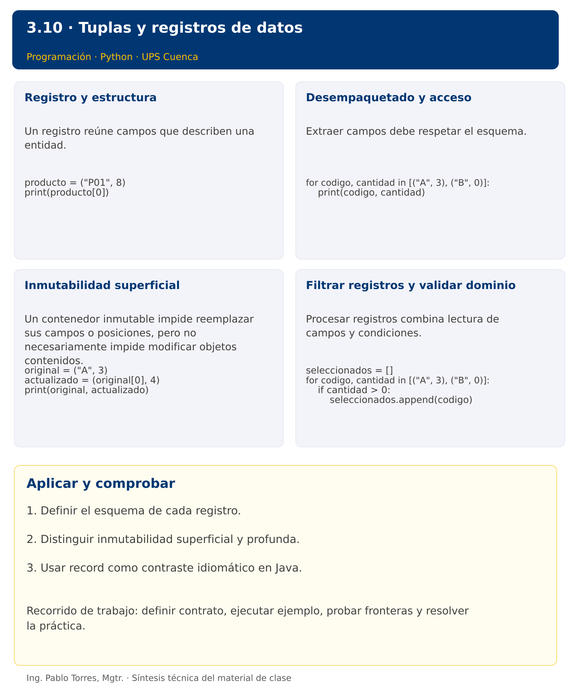

Programación

3.10 · Tuplas y registros de datos · Java
Autor: Ing. Pablo Torres, Mgtr.
Unidad 3: Lenguaje de Programación
Institución: Universidad Politécnica Salesiana · Computación · Cuenca
Índice del curso · Versión Python · Presentación Python · Anterior · Siguiente
Conceptos · Demostración · Práctica de clase · Lo esencial
Contexto. Representar un producto mediante código, nombre y cantidad. Agrupar campos evita mantener varias listas paralelas y obliga a definir el significado de cada posición o componente.
Prerrequisitos. Listas, funciones y cadenas.
Versión complementaria. Estudiar el mismo problema y los mismos casos de Python mediante construcciones idiomáticas de Java. La presentación compartida corresponde a Python.
1. Conceptos y ejemplos
1.1. Registro y estructura
Un registro reúne campos que describen una entidad. A diferencia de una lista de mediciones, cada campo puede tener un significado y tipo diferente. Definir un esquema antes de procesar varios registros. No intercambiar cantidad y precio solo porque ambos son números. Un nombre de campo reduce ambigüedad cuando la estructura crece.
Aplicar en Java. Java no posee una tupla general incorporada equivalente a tuple. Un record declara componentes con nombres y tipos, y genera accesores. Usar record Producto(String codigo, int cantidad) para el objetivo de agrupar datos, sin enseñar Object[] como sustituto principal.
record Producto(String codigo, int cantidad) {}
// new Producto("P01", 8).codigo()
1.2. Desempaquetado y acceso
Extraer campos debe respetar el esquema. Una cantidad de campos distinta puede indicar datos mal formados. Validar en el límite de entrada y mantener estructuras consistentes en el procesamiento. Cuando existan muchos campos, preferir acceso por nombre para reducir dependencia de posiciones.
Aplicar en Java. Acceder mediante producto.codigo() y producto.cantidad(). El compilador verifica tipos de componentes. Los records no se desempaquetan como una tupla de Python en una asignación común. Mantener el mismo problema con sintaxis idiomática.
for (Producto p : productos) {
System.out.println(p.codigo() + " " + p.cantidad());
}
1.3. Inmutabilidad superficial
Un contenedor inmutable impide reemplazar sus campos o posiciones, pero no necesariamente impide modificar objetos contenidos. Una tupla con una lista puede observar cambios en esa lista. Un record con un componente ArrayList también puede observar mutaciones. Usar componentes inmutables o copias defensivas cuando se requiera un valor realmente estable.
Aplicar en Java. Los campos de un record son finales y sus componentes se fijan al construir. Esto no implica inmutabilidad profunda. En esta unidad, usar String y tipos primitivos para mantener ejemplos simples y estables.
Producto original = new Producto("A", 3);
Producto actualizado = new Producto(original.codigo(), 4);
1.4. Filtrar registros y validar dominio
Procesar registros combina lectura de campos y condiciones. Mantener orden y duplicados según el contrato. Un esquema correcto no garantiza datos válidos: una edad negativa tiene tipo entero, pero puede violar el dominio. Definir si un registro inválido detiene todo el proceso o se reporta y se omite.
Aplicar en Java. Un constructor compacto del record puede validar componentes. Para conservar el nivel introductorio, también se puede validar en una función antes de crear el registro. Documentar la estrategia elegida.
for (Producto p : productos) {
if (p.cantidad() > 0) seleccionados.add(p.codigo());
}
Los bloques breves anteriores ilustran una operación y pueden requerir variables o imports del contexto. Utilizar la demostración siguiente como programa completo.
Síntesis visual

2. Demostración guiada
Problema. Mostrar códigos y cantidades de productos con existencias estrictamente positivas.
Contrato de esta demostración. Aceptar registros de dos campos: código de texto y cantidad entera no negativa. La demostración presupone esquema y dominio válidos. Conservar orden y omitir cantidad cero. Utilizar tuplas en Python y record Producto en Java.
Fuente: ejemplos/Demo.java.
import java.util.List;
public class Demo {
record Producto(String codigo, int cantidad) {}
public static void main(String[] args) {
var productos = List.of(new Producto("P01",8), new Producto("P02",0), new Producto("P03",4));
for (Producto p : productos) {
if (p.cantidad() > 0) System.out.println(p.codigo() + ": " + p.cantidad());
}
}
}
Ejecutar
Abrir una terminal dentro de 03/3.10-tuplas/java/ejemplos/ y ejecutar:
javac -encoding UTF-8 -d build *.java
java -cp build Demo
Salida esperada
P01: 8
P03: 4
Interpretación. Seguir las asignaciones y los bloques en orden, identificar qué instrucción produce cada línea y contrastar con el contrato. Modificar un dato por vez y anticipar el resultado antes de ejecutar. La salida de referencia es una expectativa; el registro de verificaciones indica qué ejecuciones se realizaron.
Ejercicios prácticos progresivos
Resolver los siguientes ejercicios en orden. Entregar enunciado, fuente y resultado propio. Los casos mostrados permiten comprobar el contrato y no sustituyen una prueba adicional de frontera.
Adaptar los mismos datos y resultados a Java. Usar record para registros y bibliotecas estándar para archivos y procesos. Para resultados booleanos, aceptar true/false en Java frente a True/False en Python. Los ejercicios que inspeccionan el intérprete deben inspeccionar la JVM y el JDK equivalentes.
Ejercicio 01. Registro simple
Crear el registro de código A y cantidad 3. Mostrar ambos campos. En Java usar record.
Caso de comprobación:
A 3
Ejercicio 02. Registro unitario
Crear un record con un componente entero de valor 5 y comprobar que tiene un componente mediante getRecordComponents().length. Contrastar con la coma de la tupla unitaria de Python.
Caso de comprobación:
1
Ejercicio 03. Desempaquetado
Desempaquetar nombre Ana y edad 20 y mostrar “Ana: 20”. En Java utilizar accesores.
Caso de comprobación:
Ana: 20
Ejercicio 04. Actualización por reemplazo
Crear una nueva tupla desde ("A",3) con cantidad 4. Conservar y mostrar original y nueva.
Caso de comprobación:
A 3
A 4
Ejercicio 05. Recorrer registros
Mostrar códigos con cantidad positiva en [("A",0),("B",4),("C",2)].
Caso de comprobación:
B
C
Ejercicio 06. Suma de cantidades
Sumar cantidades en [("A",3),("B",5)] mediante un ciclo.
Caso de comprobación:
8
Ejercicio 07. Filtrar por edad
Devolver nombres con edad estrictamente mayor que 18 en [("Ana",18),("Luis",21),("Eva",30)].
Caso de comprobación:
Luis Eva
Ejercicio 08. Registro máximo
Encontrar el código con mayor cantidad de [("A",4),("B",9),("C",9)]. Conservar la primera aparición en empate y rechazar vacío.
Caso de comprobación:
B
Ejercicio 09. Costo de registros
Calcular costo total desde (código,cantidad,precio) para [("A",2,3.5),("B",4,2)]. Rechazar cantidades o precios negativos.
Caso de comprobación:
15.00
Ejercicio 10. Filtro combinado
Seleccionar nombres con edad al menos 20 y dos o más vocales ASCII en [("Ana",20),("Luis",19),("Eva",25),("Rhys",30)]. Conservar el orden.
Caso de comprobación:
Ana Eva
3. PC3.10 · Práctica de clase
Recibir registros (codigo, horas, tarifa). Retornar códigos cuyo costo horas*tarifa supere estrictamente un umbral. Conservar orden y datos originales. Rechazar horas o tarifas negativas. Definir el equivalente Java mediante un record y exigir el mismo resultado.
Requisitos y restricciones
- Resolver en una sola versión, Python o Java.
- Mantener nombres y responsabilidades indicados; explicar cualquier adaptación idiomática.
- Aplicar únicamente los conceptos ya introducidos.
- Conservar las entradas cuando el enunciado lo exija.
- Distinguir valores fuera de contrato de errores que el programa debe gestionar.
Casos de aceptación de la PC
| Entrada / escenario | Resultado esperado |
|---|---|
| [("A",2,5),("B",4,3)], umbral=10 | ["B"] |
| [], umbral=10 | [] |
| [("A",-1,5)] | registro inválido |
| [("A",2,5)], umbral=10 | [] |
Probar y registrar evidencia
Crear una carpeta personal PC3.10 separada de las demostraciones. Guardar cada caso con entrada, resultado esperado y resultado real. Compilar javac -encoding UTF-8 -d build *.java y ejecutar java -cp build Solucion; usar Solucion.java como entrada personal. Para entradas de teclado, guardar casos/entrada-01.txt y redirigirla con < casos/entrada-01.txt. Para funciones, crear llamadas con los datos de la tabla.
- Registrar
evidencias/PC3.10.mdcon comandos, versión real, salidas y explicación. - Crear un commit funcional como
feat(pc3.10): implementar-regla-principal. - Obtener el hash real con
git rev-parse HEADy anotarlo en la evidencia. - Revisar el cambio con
git show HASHy comparar avances congit diff HASH_ANTERIOR HASH_ACTUAL. Sustituir los marcadores por hashes reales. - Agregar una prueba de frontera distinta de las incluidas y justificar qué error detectaría.
No se requiere proyecto acumulativo ni rúbrica individual de esta PC.
Lo esencial
- Definir el esquema de cada registro.
- Distinguir inmutabilidad superficial y profunda.
- Usar record como contraste idiomático en Java.
Referencias técnicas
Índice del curso · Versión Python · Presentación Python · Anterior · Siguiente